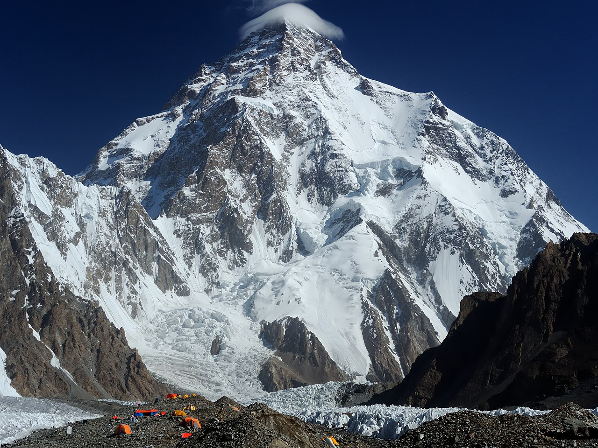

| K2 |
|  |
The Second Highest Mountain on Earth
-
K2 has an elevation of 8611 m., it is the second highest and the second most dangerous mountain on the planet.
-
It lies in the Karakoram range, partially in the Gilgit-Baltistan region of Pakistan-administered Kashmir and partially in the China-administered Trans-Karakoram Tract.
-
K2 also became popularly known as the Savage Mountain after George Bell—a climber on the 1953 American expedition—told reporters, "It's a savage mountain that tries to kill you."
-
Approximately one person dies on the mountain for every four who reach the summit.
-
K2’s death zone is particularly perilous, and its unpredictable weather, constant rockfalls, and difficult climbing sections contribute to its high mortality rate.